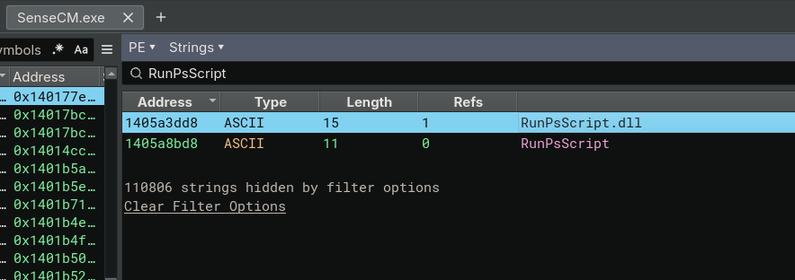
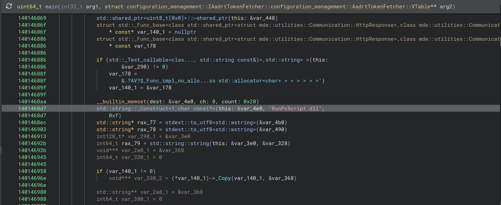
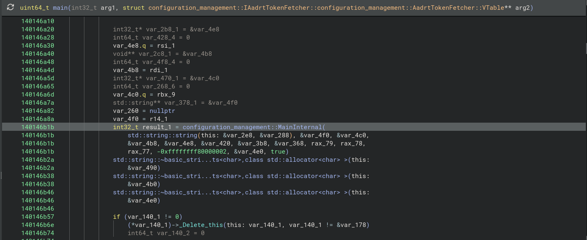
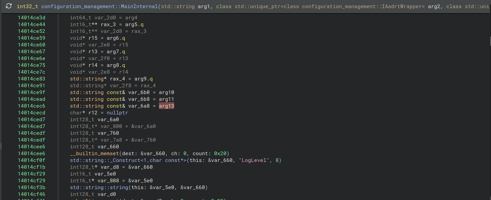
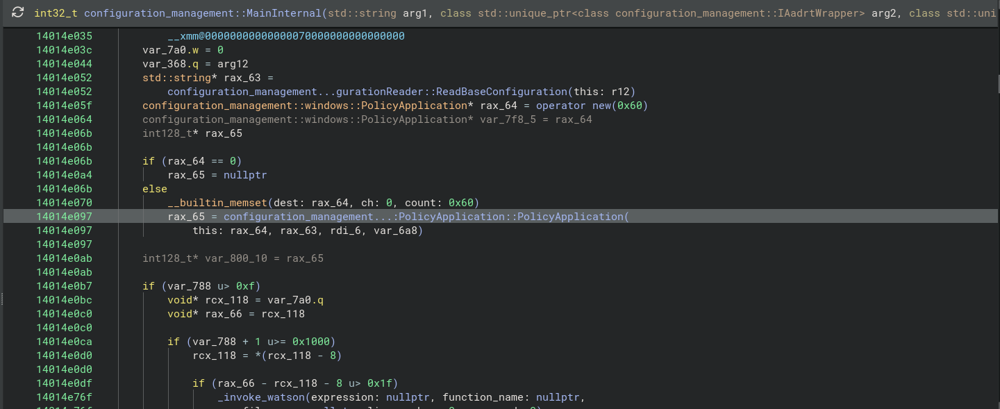

3.1 SenseCM.exe → RunPsScript.dll
String Scan

main()
String Construct

main() → MainInternal()

uint64_t main(
int32_t arg1,
struct configuration_management::IAadrtTokenFetcher::configuration_management::AadrtTokenFetcher::VTable** arg2
) {
// ...
// String Construct
std::string::_Construct<1,char const*>(this: &var_4e0, "RunPsScript.dll", 0xf)
// ...
// From main() to MainInternal()
int32_t result_1 = configuration_management::MainInternal(
std::string::string(this: &var_2e8, &var_288),
&var_4f0,
&var_4c0,
&var_4b8,
&var_4e8,
&var_420,
&var_3b8,
&var_368,
rax_79,
rax_78,
rax_77,
-0xffffffff80000002,
&var_4e0, // RunPsScript.dll
true
)
// ...
}
MainInternal()
String Copy

MainInternal() → PolicyApplication()

int32_t configuration_management::MainInternal(
std::string arg1,
std::unique_ptr<configuration_management::IAadrtWrapper> arg2,
std::unique_ptr<configuration_management::IJoinStateFetcher> arg3,
std::unique_ptr<configuration_management::IAadrtTokenFetcher> arg4,
std::unique_ptr<configuration_management::ILeviathanTokenProvider> arg5,
std::function<configuration_management::AAdAccessLimitationStatus()> arg6,
std::function<std::string()> arg7,
std::function<
std::shared_ptr<mde::utilities::Communication::HttpResponse>(
mde::utilities::Communication::IHttpClient&,
const std::string&,
const std::string&,
const std::string&,
std::shared_ptr<std::map<std::string, std::string>>,
std::shared_ptr<std::map<std::string, std::string>>
)
> arg8,
std::string arg9,
const std::string& arg10,
const std::string& arg11,
HKEY arg12,
const std::string& arg13,
bool arg14
) {
// ...
std::string const& var_6b0 = arg10
std::string const& var_6b8 = arg11
std::string const& var_6a8 = arg13 // RunPsScript.dll
// ...
rax_65 = configuration_management...:PolicyApplication::PolicyApplication(
this: rax_64,
rax_63,
rdi_6,
var_6a8 // RunPsScript.dll
)
// ...
}
PolicyApplication()
void configuration_management::windows::PolicyApplication::PolicyApplication(
configuration_management::windows::PolicyApplication* this,
std::string const& arg2,
std::string const& arg3,
std::string const& arg4
) {
// 140177e2f mov r14, r9
std::string const& r14 = arg4 // RunPsScript.dll (r9)
std::string const& rsi = arg3
// ...
*this = &configuration_management::windows::PolicyApplication::`vftable'
// ...
// 140177f21 mov r9, r14
rbp = configuration_management::windows::ScriptRunner::ScriptRunner(
this: rax_2,
arg2,
rsi,
r14, // RunPsScript.dll
true
)
// ...
}
ScriptRunner()
void configuration_management::windows::ScriptRunner::ScriptRunner(
configuration_management::windows::ScriptRunner* this,
std::string const& arg2,
std::string const& arg3,
std::string const& arg4,
bool arg5
) {
*this = &configuration_management::windows::ScriptRunner::`vftable'
// 1401a4fc9 mov rbx, r9
stdext::from_utf8<std::string>(this + 8)
std::string::string(this: this + 0x28, arg4)
void** var_1a8 // rbx
void** lpLibFileName = stdext::from_utf8<std::string>(&var_1a8)
if (lpLibFileName[3] u> 7)
lpLibFileName = *lpLibFileName
HMODULE rax_2 = LoadLibraryW(lpLibFileName)
*(this + 0x58) = rax_2
// ...
*(this + 0x48) = GetProcAddress(hModule: *(this + 0x58), lpProcName: "RunPsScript")
}
SenseCM.exe Compiler Optimization
When calling configuration_management::windows::ScriptRunner::ScriptRunner from configuration_management::windows::PolicyApplication::PolicyApplication, the following variables are passed as arguments:
rax_2arg2rsir14true
However, inside ScriptRunner(), the DLL name cannot be identified in the decompiler.
Looking at the disassembly, it calls the std::string::string() function as follows:
lea rcx, [rsi+0x28] <!-- (Load Effective Address of `rsi`'s 0x28 offset, i.e., this + 0x28) -->
mov rdx, rbx <!-- (copy rbx to rdx) -->
call std::string::string <!-- (call std::string::string) -->
According to the x64 calling convention, when passing arguments, the calling convention order is as follows:
rcxrdxr8r9- ...
Therefore, we can see that the 2nd argument, arg4, comes from rbx.
Looking at the disassembly, rbx is provided from r9 by the following instruction:
This confirms that r9 is set before calling the current function:
mov byte [rsp+0x20 {var_58}], 0x1
mov r9, r14
mov r8, rsi
mov rdx, r12
mov rcx, rbx
call configuration_management::windows::ScriptRunner::ScriptRunner
Therefore, arg4 is indeed the string "RunPsScript.dll".
Looking at the assembly in more detail, rax is returned from stdext::from_utf8<std::string>.
In the decompiler view, this corresponds to the following conditional statement:
In other words, the value represented as lpLibFileName in the decompiler originates from rax, which is the return value of stdext::from_utf8<std::string>.
This can also be verified in the LoadLibraryW function call:
rax is passed as the first argument (rcx) to LoadLibraryW.
In summary, arg4 (rbx) is passed to stdext::from_utf8<std::string>, and that function returns the result in rax. Since that function is a string type conversion function, it converts the type of const std::string& "RunPsScript.dll" to a Wide String and calls LoadLibraryW. Therefore, expressed very simply, it is as follows:
configuration_management...:PolicyApplication::PolicyApplication:
<!-- ... -->
mov byte [rsp+0x20 {var_58}], 0x1
mov r9, r14 <!-- Compiler Optimization -->
mov r8, rsi
mov rdx, r12
mov rcx, rbx
call configuration_management::windows::ScriptRunner::ScriptRunner
configuration_management::windows::ScriptRunner::ScriptRunner:
...
xor rax, rsp {var_3b8}
mov qword [rbp+0x270 {var_48}], rax
mov rbx, r9 <!-- Compiler Optimization -->
...
mov rdx, rbx
lea rcx, [rbp+0x110 {var_1a8}]
call stdext::from_utf8<std::string>
cmp qword [rax+0x18], 0x7 <!-- if (lpLibFileName[3] u> 7) -->
jbe 0x1401a5019
mov rcx, rax <!-- 0x1401a5019 -->
call qword [rel LoadLibraryW] <!-- LoadLibraryW(lpLibFileName) -->
mov qword [rsi+0x58], rax
test rax, rax
jne 0x1401a5033